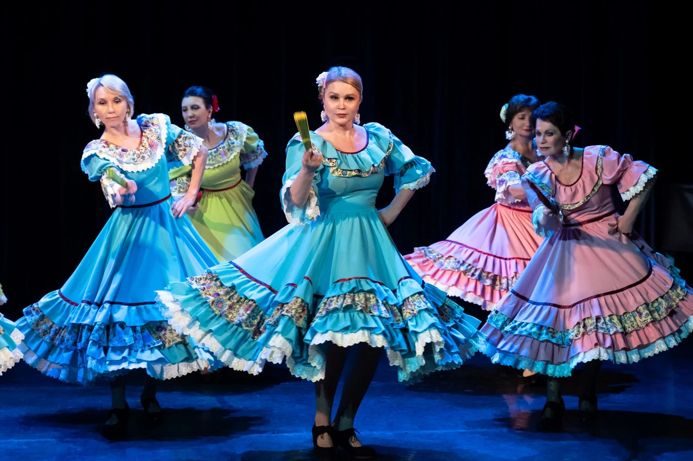

Театр и школа Лилии Сафиной
Costa del Flamenco
Театр танца
На сцене
Фламенко в хореографии Лилии Сафиной. Два кадра из майского концерта на Барклая.
В архив театра


Школа на Красных Воротах
В репетиционном зале
На Садовой-Спасской учат слышать ритм, держать корпус и соединять шаг с движением рук. В осеннем расписании есть дневные и вечерние репетиции.
1 200 ₽ за разовое групповое занятие
Подобрать занятие